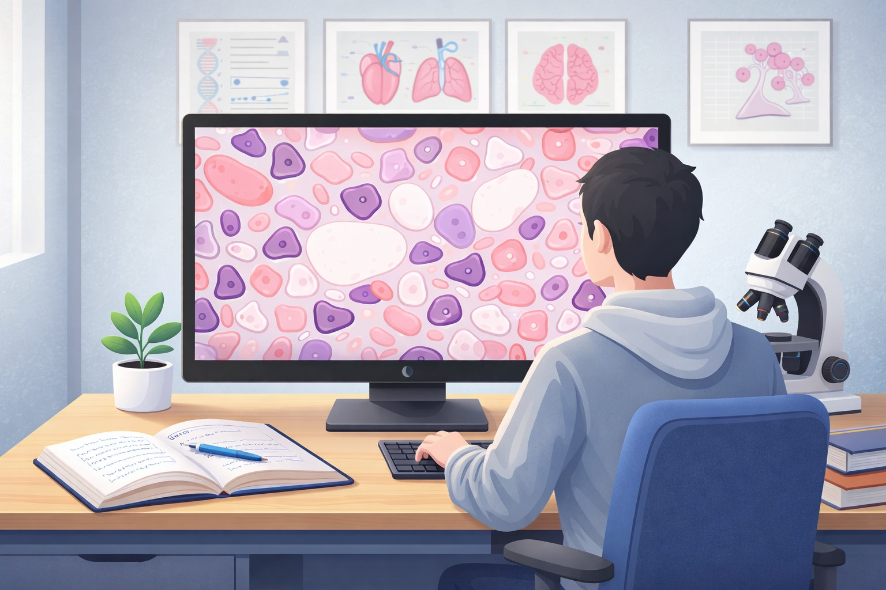
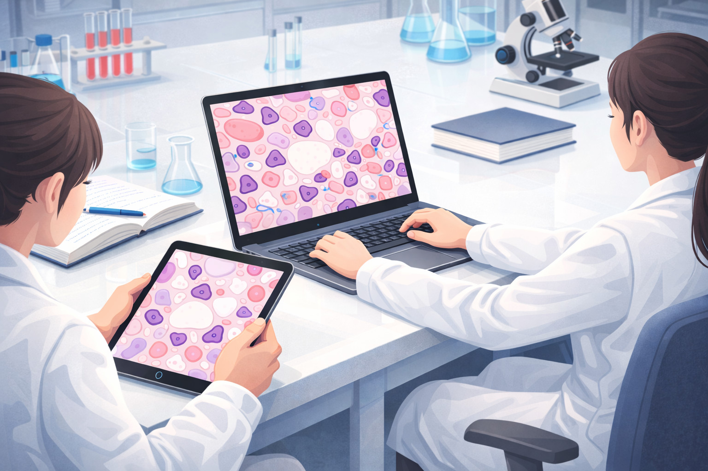

DigitalDuck es una plataforma educativa innovadora diseñada para revolucionar el aprendizaje de la patología en estudiantes de ciencias de la salud. Desarrollada en la Universidad Austral de Chile, sede Puerto Montt, esta herramienta digital proporciona acceso a preparaciones histopatológicas de alta calidad desde cualquier dispositivo.
Nuestra misión es democratizar el acceso a la educación en patología, superando las limitaciones de los métodos tradicionales y brindando una experiencia de aprendizaje interactiva y accesible para todos los estudiantes.
CONOCE LAS CARACTERÍSTICAS
Accede a preparaciones histopatológicas digitales de alta resolución que puedes explorar con zoom y navegación interactiva, simulando la experiencia del microscopio óptico.
Estudia desde cualquier dispositivo: computador, tablet o smartphone. Aprende a tu ritmo, en cualquier lugar y momento.
Material educativo cuidadosamente seleccionado y organizado por docentes expertos, alineado con los objetivos de aprendizaje del curso.
Complementa tus clases presenciales con estudio independiente. Revisa las preparaciones las veces que necesites hasta dominar cada concepto.
Diseño amigable y fácil de usar que facilita la navegación y el enfoque en el aprendizaje sin barreras tecnológicas.
Plataforma en línea disponible 24/7 para que estudies cuando mejor te convenga, sin depender de horarios de laboratorio.

Nuestros prácticos digitales te permiten aplicar tus conocimientos teóricos en casos reales de forma interactiva. Cada práctico incluye objetivos de aprendizaje claros, preparaciones histológicas comentadas y ejercicios de autoevaluación.
Desarrolla tus habilidades de observación, interpretación y diagnóstico histopatológico con casos cuidadosamente seleccionados que reflejan patologías relevantes en la práctica clínica.
ACCEDER A PRÁCTICOS¿Quieres crear un caso clínico o un práctico completo? El Generador DigitalDuck te deja elegir: arma una sola lámina en minutos, o un práctico completo con láminas, tablas comparativas y evaluaciones — sin necesidad de saber programación. Descarga un archivo listo para publicar.
ABRIR EL GENERADOR¿Tienes preguntas sobre DigitalDuck? ¿Quieres colaborar con el proyecto? Estamos aquí para ayudarte.
Escuela de Tecnología Médica
Universidad Austral de Chile - Puerto Montt